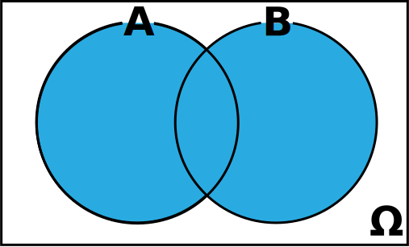

PSTAT 5A: Lecture 03
Introduction to Probability


Uncertainty
- Uncertainty surrounds us!
- Statistics is, in many ways, the study of uncertainty.
- Probability is the language of uncertainty; it gives us a way to quantify exactly how this uncertainty factors into our decision making process.
The Building Blocks of Probability
Experiment
- We begin with the notion of an experiment. In the context of Probability, we have the following definition:
Definition
An experiment is any procedure that can be repeated an infinite number of times, and each time the procedure is repeated there are a fixed set of things that could occur.
- An example of an experiment is tossing a coin:
- I could go into Storke field and toss a coin an infinite number of times, and each time I toss the coin it will land on either
headsortails.
- I could go into Storke field and toss a coin an infinite number of times, and each time I toss the coin it will land on either
Outcome Space
- The things that could occur on each repetition of an experiment are called outcomes.
Definition
The outcome space of an experiment is the set \(\Omega\) consisting of all outcomes of the experiment.
For instance, in the coin tossing example the outcome space is
\(\Omega =\{\)heads,tails\(\}\).As an aside: some textbooks/professors refer to the outcome space as the sample space, and use the letter \(S\) to denote it.
- So, if you are doing self-study and encounter the term “sample space”, know that it is the same thing as what we are calling the “outcome space”!
Worked-Out Example
- Let’s do an example together.
Worked-Out Exercise 1
Consider the experiment of rolling two four-sided dice and recording the faces that appear. What is an appropriate outcome space for this experiment?
First, let’s find the outcome space.
On each dice roll, we will observe either a \(1\), \(2\), \(3\), or \(4\).
But, we cannot simply say that our outcome space is \(\{1, 2, 3, 4\}\) as this does not take into account the fact that we rolled two dice!
- So, lets establish the following notation: let \((1, 1)\) denote the outcome “the first die landed on \(1\), and the second landed on \(1\). Similarly, we can let \((i, j)\) denote ”the first die landed on \(i\) and the second die landed on \(j\),” for arbitrary \(i\) and \(j\) in the set \(\{1, 2, 3, 4\}\).
- In this way, the outcome space becomes:
\[\begin{align*} \Omega = \{ & (1, 1), \ (1, 2), \ (1, 3), \ (1, 4), \\ & (2, 1), \ (2, 2), \ (2, 3), \ (2, 4), \\ & (3, 1), \ (3, 2), \ (3, 3), \ (3, 4), \\ & (4, 1), \ (4, 2), \ (4, 3), \ (4, 4) \} \end{align*}\]
Now it’s Your Turn!
Exercise 1
Consider the experiment of tossing a coin, picking a number from the set \(\{1, 2\}\), and then tossing another coin. What is the outcome space of this experiment?
Other Ways of Describing Outcome Spaces
There are a few other ways we can use to describe the outcome space of an experiment.
Let’s return to the tossing four dice example from a few slides ago. Another way we could have kept track of the outcomes was by using a table, recording the outcome of the first die roll in the rows and the outcomes of the second in the columns:
| 1 | 2 | 3 | 4 | |
| 1 | (1, 1) | (1, 2) | (1, 3) | (1, 4) |
| 2 | (2, 1) | (2, 2) | (2, 3) | (2, 4) |
| 3 | (3, 1) | (3, 2) | (3, 3) | (3, 4) |
| 4 | (4, 1) | (4, 2) | (4, 3) | (4, 4) |
Other Ways of Describing Outcome Spaces
So, tables are a good way of keeping track of outcomes.
But, they really only work when we have two of something (e.g. two dice, two coins, etc.). What happens if we, for example, toss three coins?
This is where tree diagrams can become useful.
- To read off the outcomes from a tree, we follow the branches. For example, following the leftmost branch yields
which is the outcome \((H, H, H)\).
- Can you tell me what the following outcome is?
- Can you tell me how many outcomes will be in the outcome space?
Events
Sometimes, it will be useful to consider quantities that are a bit more complex than single outcomes.
For example, consider the experiment of rolling two 4-sided dice. I could ask myself: in how many outcomes does the second dice roll result in a higher number than the first?
This leads us to the notion of an event.
Definition
An event is a subset of the outcome space. In other words, an event is just a set consisting of one or more outcomes.
- As an example, the event \(E\) defined to be “the second dice lands on a number strictly larger than the first” can be written \[ E = \{(1, 2), \ (1, 3), \ (1, 4), \ (2, 3), \ (2, 4), \ (3, 4)\} \] as these are the only outcomes in which the second dice lands on a number strictly larger than the first.
Exercise 2
Consider the experiment of tossing three coins and recording the faces that appear. If \(F\) denotes the event “an even number of heads was observed”, what is the mathematical representation of \(F\) (i.e. as a collection of outcomes)?
Unions and Intersections
Remember how we talked about the union of two sets last lecture?
Well, since events are just sets, we can talk about the union of two sets.
In words, the union corresponds to an “or” statement.
For example, let \(E\) denote the event “it is raining” and \(F\) denote the event “the ground is wet”, then the event \(E \cup F\) would be the event “it is raining or the ground is wet”.
The intersection of two events (denoted with the \(\cap\) symbol), corresponds to an “and” statement
- For example, if \(E\) and \(F\) are defined as in the bullet point above, then \(E \cap F\) denotes the event “it is raining and the ground is wet”.
Complements
The complement of an event \(E\), denoted \(E^{\complement}\), represents the event “not \(E\)”
- For instance, if \(E\) again denotes the event “it is raining”, then \(E^{\complement}\) denotes the event “it is not raining”.
Leadup
Recall that \(E \cap F\) denotes the event “both \(E\) and \(F\) occurred.”
Also recall that \(A^{\complement}\) denotes “not \(A\)”; i.e. “\(A\) did not occur”
As such, \((E \cap F)^{\complement}\) denotes the event “it is not the case that both \(E\) or \(F\) occurred.”
This means that either \(E\) did not occur, or \(F\) did not occur (or both).
Mathematically, this is equivalent to \(E^\complement \cup F^\complement\).
As such, it seems we have arrived at the following equality: \[ (E \cap F)^{\complement} = E^\complement \cup F^\complement \]
DeMorgan’s Laws
- This is one of what are known as DeMorgan’s Laws.
DeMorgan’s Laws
Given two events \(E\) and \(F\), we have the following:
- \((E \cap F)^{\complement} = E^\complement \cup F^\complement\)
- \((E \cup F)^{\complement} = E^\complement \cap F^\complement\)
- We will not prove these in this class. However, please familiarize yourself with them as they will be incredibly useful!
Exercise 3
Consider the experiment of tossing two coins at the same time. Define the following events:
- \(A\) = “we observe an even number of heads”
- \(B\) = “we observe an odd number of heads”
- \(C\) = “both coins landed heads”
Express the following events in words:
- \((A \cup C)^\complement\)
- \(A \cap B\)
Leadup
Now, there is something interesting about the events defined in the previous example.
The outcome space of the underlying experiment is \[ \Omega = \{ (H, H), \ (H, T), \ (T, H), \ (T, T)\} \] and
- \(A = \{(H, H), \ (T, T)\}\)
- \(B = \{(H, T), \ (T, H)\}\)
- \(C = \{(H, H)\}\)
- First note that the event \(C\) is contained in the event \(A\).
This is an example of a subset: we say that a set \(A\) is a subset of another set \(B\) if all elements of \(A\) are also elements of \(B\). We use the notation \(A \subseteq B\).
- For example, \(\{2, 3\} \subseteq \{1, 2, 3, 4\}\)
Another thing to note is that \(A \cap B\) has no elements- there is nothing common to both \(A\) and \(B\)!
The set with no elements is called the empty set, and is denoted \(\varnothing\).
Two events whose intersection is the empty said are said to be disjoint.
Probability
Now, you may note that we have yet to mention the term “probability.”
To get a better sense of “probability”, let’s examine how we use the word in everyday speech:
- “the chance of rain is 50%”
- “odds of winning big at a Casino is 1%”
- “probability of scoring a 100% on the PSTAT 5A Midterm 1 is 95%”
Notice that “rain”, “winning big at a Casino”, and “scoring 100% on the PSTAT 5A Midterm 1” are all events.
As such, “probability” seems to take in an event and spit out a number.
Probability
- In other words, we can think of “probability” (or, more accurately, what we refer to as a probability measure) as a function that takes in an event and outputs a number.
The symbol we use for a probability measure is \(\mathbb{P}\); i.e. we write \(\mathbb{P}(E)\) to denote “the probability of event \(E\)”.
Now, this doesn’t really tell us how to define \(\mathbb{P}(E)\) for an arbitrary event \(E\).
There are (roughly) two schools of thought when it comes to defining the probability of an event: the long-run frequency approach, and the classical approach.
Long-Run-Frequency Approach
The long-run frequency approach defines the probability of an event \(E\) to be the proportion of times \(E\) occurs, if the underlying experiment were to be repeated a large number of times.
To help us understand the notion of long-run frequencies, let’s go through an example together. Suppose we toss a coin and record whether the outcome lands
headsortails, and further suppose we observe the following tosses:
H, T, T, H, T, H, H, H, T, T
- To compute the relative frequency of
headsafter each toss, we count the number of times we observedheadsand divide by the total number of tosses observed.
| Toss | 1 | 2 | 3 | 4 | 5 | 6 | 7 | 8 | 9 | 10 |
|---|---|---|---|---|---|---|---|---|---|---|
| Outcome | H |
T |
T |
H |
T |
H |
H |
H |
T |
T |
Raw freq. of H |
1 | 1 | 1 | 2 | 2 | 3 | 4 | 5 | 5 | 5 |
Rel. freq of H |
1/1 | 1/2 | 1/3 | 2/4 | 2/5 | 3/6 | 4/7 | 5/8 | 5/9 | 5/10 |
- It turns out (by what is known as the Weak Law of Large Numbers) that, regardless of the experiment and event, the relative frequencies will converge to some fixed value.
- What the long-run frequencies approach to probability says is to define this value to be the probability of the event.
Classical Approach
The second way to define probabilities is what is known as the classical approach.
As an important note: we can only apply the classical approach if we believe all outcomes in our experiment to be equally likely.
- Examples of situations in which it is safe to assume equally likely outcomes include: tossing a fair coin some number of times, rolling a fair \(k\)-sided die, selecting a card at random from a deck of cards, etc.
If we make the equally likely outcomes assumption, then the classical approach to probability tells us to define \(\mathbb{P}(E)\) as \[ \mathbb{P}(E) = \frac{\text{number of ways $E$ can occur}}{\text{total number of outcomes}} \]
So, for example, if we toss a fair coin once, then the classical approach to probability (which can be used since the coin is fair) states that \[ \mathbb{P}(\texttt{heads}) = \frac{1}{2} \]
Comparisons
Let’s quickly compare these two approaches to defining the probability of an event.
The long-run frequencies definition has the benefit of not requiring the assumption of equally likely outcomes.
- However, it relies on the (perhaps odd) consideration of considering what happens when we repeat an experiment a large number of times.
The classical approach does not rely on such considerations, making the definitions it produces perhaps a bit more easily interpretable.
- However, it crucially requires the assumption of equally likely outcomes.
Comparisons
- For the purposes of this class, we won’t be too concerned with defining the probability of an event: in many cases, we will just give you the probability.
In situations where we do not provide a probability a priori, there will likely be some key word or phrase that lets you know we are looking for the classical definition.
- Again, important words/phrases to look out for are: fair, at random, etc.
Exercise 4
Part (a) Consider the experiment of rolling a fair six-sided die once and recording the number on the face that is showing. What is the probability that the die lands on the number 1?
Part(b) A coin is tossed repeatedly, and the following relative frequency diagram is constructed to track the relative frequency of heads. What is the probability that the coin will land heads? Is the coin fair?
Axioms of Probability
It turns out that there are three axioms that a probability measure must satisfy, collectively called the axioms of probability:
- \(\mathbb{P}(E) \geq 0\) for any event \(E\)
- \(\mathbb{P}(\Omega) = 1\)
- For disjoint events \(E\) and \(F\), \(\mathbb{P}(E \cup F) = \mathbb{P}(E) + \mathbb{P}(F)\).
If you are not familiar with the notion of axioms: an axiom is a fundamental “truth” of math, that does not need to be proven.
- Axioms are like the building blocks, or base assumptions on which a system of math is predicated.
Probability Rules
Summary
Let’s quickly summarize the concepts/terms we’ve covered:
- Experiment: any procedure that can be repeated an infinite number of times, where each time the procedure is repeated there are a fixed set of outcomes that can occur.
- Outcome Space: the set of all outcomes associated with a particular experiment.
- Event: a subset of the outcome space
- Probability (measure): a function that takes an event and outputs a number
These are the basic building blocks of probability.
We will now combine them!
Notational Reminder
- Before we go any further, I’d like to stress something:
Important
In this class, using proper notation is very important.
- For example, if we have an event \(E\) whose probability of occurring is, say, \(0.5\), we must write \(\mathbb{P}(E) = 0.5\); it is NOT correct to say \(E = 0.5\), or \(\mathbb{P} = 0.5\).
The Complement Rule
- The first result we will explore is the so-called complement rule.
The Complement Rule
Given an event \(E\), we have \(\mathbb{P}(E^\complement) = 1 - \mathbb{P}(E)\)
- As an example: if we roll a fair six-sided die and if \(E =\) “rolling a \(1\)”, then \(E^\complement =\) “not rolling a \(1\)” and \[\mathbb{P}(E^\complement) = 1 - \mathbb{P}(E) = 1 - 1/6 = \boxed{5/6}\]
The Probability of the Empty Set
- Recall that the empty set (\(\varnothing\)) is the set containing no elements.
The Probability of the Empty Set
\(\mathbb{P}(\varnothing) = 0\).
- The “proof” of this is relatively simple: note that \(\Omega^\complement = \varnothing\) (the opposite of “everything” is “nothing”); we also know that \(\mathbb{P}(\Omega) = 1\) so \[ \mathbb{P}(\Omega^\complement) = \mathbb{P}(\varnothing) = 1 - 1 = 0 \]
The Addition Rule
- The next result we will explore is the so-called addition rule.
The Addition Rule
Given events \(E\) and \(F\), we have \(\mathbb{P}(E \cup F) = \mathbb{P}(E) + \mathbb{P}(F) - \mathbb{P}(E \cap F)\)
- Note that if \(E\) and \(F\) are disjoint, then we recover the third axiom of probability!
Worked-Out Example
Worked-Out Example 2
A recent survey at the Isla Vista Co-Op revealed that 50% of shoppers buy bread, 30% buy jam, and 20% buy both bread and jam.
- What is the probability that a randomly selected shopper will not purchase jam?
- What is the probability that a randomly selected shopper will purchase either bread or jam (or both)?
Solution to Part (a)
Let \(J\) denote the event “a randomly selected shopper will purchase jam”.
- From the problem statement, we have that \(\mathbb{P}(J) = 0.3\)
The event “a randomly selected shopper will not purchase jam” is given by \(J^\complement\), meaning the quantity we seek is \(\mathbb{P}(J^\complement)\).
By the Complement Rule, we have \[ \mathbb{P}(J^\complement) = 1 - \mathbb{P}(J) = 1 - 0.3 = \boxed{0.7 = 70\%} \]
Solution to Part (b)
Let \(J\) be defined as before, and let \(B\) denote the event “a randomly selected shopper will purchase bread or jam”
The first quantity provided in the problem statement tells us that \(\mathbb{P}(B) = 0.5\)
The final quantity provided in the problem statement tells us that \(\mathbb{P}(B \cap J) = 0.2\)
The event “a randomly selected shopper will purchase either bread or jam” is given by \(B \cup J\), meaning we seek \(\mathbb{P}(B \cup J)\).
By the Addition Rule,
\[\begin{align*} \mathbb{P}(B \cup J) & = \mathbb{P}(B) + \mathbb{P}(J) - \mathbb{P}(B \cap J) \\ & = 0.5 + 0.3 - 0.2 = \boxed{0.6 = 60\%} \end{align*}\]
General Strategy
General Strategy for Probability Word Problems
- Start by defining events
- Next, translate the information provided to you (through the problem statement) to be in terms of the events you defined above
- Then, identify the quantity you are trying to obtain
- Finally, apply the various probability rules to solve for the desired quantity.
Time to Put Everything Together!
Exercise 5
Two fair six-sided dice are rolled.
- What is the outcome space of this experiment?
- What is the probability that the first die lands on the number 2?
- What is the probability that the first die lands on the number 2, or the second die lands on an even number?
An Additional Tool
Venn Diagrams
I’d like to impart one additional tool that can help with visualizing the relationship between events: Venn Diagrams
We denote the outcome space \(\Omega\) by a large rectangle, and denote events by circles.
Since events are subsets of \(\Omega\), we draw them inside (physically) the rectangle representing \(\Omega\).
- Things get a bit more interesting when we consider several events:

- The reason Venn Diagrams are so useful is that they enable us to visualize different set operations.
- For example, given two events \(A\) and \(B\), the event \(A \cap B\) is found on a Venn Diagram as:

Summary
\(A^\complement\)
(complement)
\(A \cap B\)
(intersection)

\(A \cup B\)
(union)
DeMorgan’s Laws
This can also help give us some intuition on DeMorgan’s Laws as well!
- Let’s do this on the whiteboard together.
We will return to Venn Diagrams periodically throughout this course- for now, I hope they provide a useful tool to help you visualize the set operations we learned this lecture.
Lecture Summary
Lecture Summary
Today, we began our introduction to the field of probability.
- Probability, loosely speaking, provides us with a way to quantify uncertainty.
We discussed the notions of experiments, outcomes, outcome spaces, events, and probabilities.
- Remember that there are certain tools/diagrams (namely, tables and tree diagrams) that can help us determine the outcome space of an experiment.
We then discussed three probability rules: the complement rule, the probability of the empty set, and the addition rule.
We also saw how Venn Diagrams can help us visualize set operations.
Next time, we will start talking about ways to compute the probability of more complex events under the assumption of equally likely outcomes.